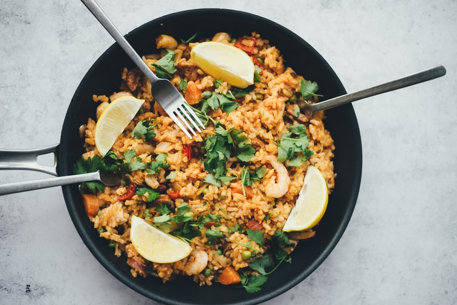
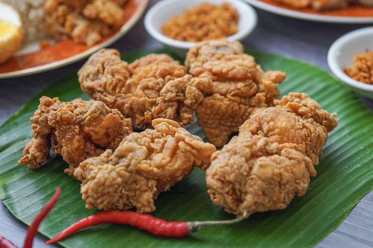

Asal
Kota Pasuruan adalah sebuah kota di Provinsi Jawa Timur, Indonesia. Kota ini terletak 60 km sebelah
tenggara Surabaya, ibu kota provinsi Jawa Timur dan 355 km sebelah barat laut Denpasar, Bali.
Seluruh wilayah Kota Pasuruan berbatasan dengan Kabupaten Pasuruan.
Pasuruan adalah sebuah kota pelabuhan kuno. Pada zaman Kerajaan Airlangga, Pasuruan sudah dikenal
dengan sebutan "Paravan" . Pada masa lalu, daerah ini merupakan pelabuhan yang sangat ramai, yang
dulu dikenal sebagai "Tanjung Tembikar". Letak geografisnya yang strategis menjadikan Pasuruan
sebagai pelabuhan transit dan pasar perdagangan antar pulau serta antar negara. Banyak bangsawan dan
saudagar kaya yang menetap di Pasuruan untuk melakukan perdagangan. Hal ini membuat kemajemukan
bangsa dan suku bangsa di Pasuruan terjalin dengan baik dan damai.
Kegiatan
Bermain game menjadi salah satu kegiatan favorit saya ketika memiliki waktu luang. Dengan bermain
game
saya bisa menghibur diri sendiri khususnya ketika saya memiliki banyak pikiran.
Tidak sedikit orang yang membutuhkan pelampiasan ketika sedang memasuki fase kehidupan yang
membuatnya menjadi penat. Game online dapat dijadikan sebagai salah satu solusi untuk membantu
menghilangkan rasa penat yang dirasakan.
Karena dengan bermain game online akan membuat saya merasa senang. Selain itu, otak saya pun akan
memperoleh rangsangan baru sehingga dapat kembali fresh. Oleh karena itu, bermain game online
terbilang ampuh untuk menghilangkan rasa penat di otak saya.
Makanan
Makanan adalah zat yang dimakan oleh makhluk hidup untuk mendapatkan nutrisi yang kemudian diolah
menjadi energi. Karbohidrat, lemak, protein, vitamin, dan mineral merupakan nutrien dalam makanan
yang dibutuhkan oleh tubuh. Cairan yang dipakai untuk maksud ini sering disebut minuman, tetapi kata
'makanan' juga bisa dipakai. Makanan yang dikonsumsi oleh manusia disebut pangan, sedangkan makanan
yang dikonsumsi oleh hewan disebut pakan.
Nasi Goreng

Nasi goreng adalah sebuah makanan berupa nasi yang digoreng dan diaduk dalam minyak goreng,
margarin, atau mentega. Biasanya ditambah kecap manis, bawang merah, bawang putih, asam jawa,
lada dan bumbu-bumbu lainnya; seperti telur, ayam, dan kerupuk. Ada pula nasi goreng jenis lain
yang dibuat bersama ikan asin yang juga populer di seluruh Indonesia.
Ayam Goreng

Ayam goreng adalah hidangan yang dibuat dari daging ayam dicampur tepung bumbu yang digoreng
dalam minyak goreng panas. Beberapa rumah makan siap saji secara khusus menghidangkan ayam
goreng, misalnya Kentucky Fried Chicken. Sementara itu beberapa rumah makan di Indonesia juga
menghidangkan ayam goreng tradisional Indonesia seperti Ayam Goreng Suharti, Fatmawati dan Mbok
Berek. Makanan ini juga identik dengan karakter Ipin dalam serial TV anak Upin & Ipin.